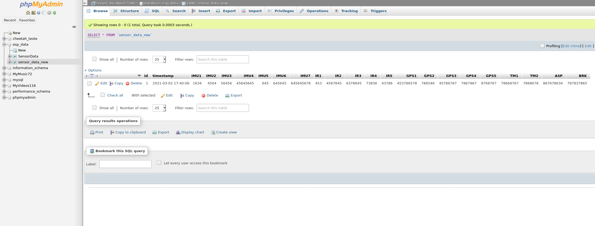

Telemetria Cheetah
Diagrama de sensores
Visão Geral
O diagrama abaixo representa uma possível configuração da integração entre os diversos sistemas sensoriais e o computador de bordo:

Dispositivos:
| ID | Nome | Tipo |
|---|---|---|
| MCU | Microcontrolador | ESP32 |
| GCS | Estação de recepção de dados | SiK/3DR telemetry radio |
| COM | Rádio de telemetria 915MHz | SiK/3DR telemetry radio |
| IMU | Inertial Measurement Unit | GY-80 / GY-521 |
| IR1 | Infravermelho 1 | MLX90614 |
| IR2 | Infravermelho 2 | MLX90614 |
| IR3 | Infravermelho 3 | MLX90614 |
| IR4 | Infravermelho 4 | MLX90614 |
| IR5 | Infravermelho 5 | MLX90614 |
| BRK | Pressão de freios | 53CP08-02 |
| TM1 | Temperatura 1 | DS18B20 |
| TM2 | Temperatura 2 | DS18B20 |
| GPS | Sistema de posicionamento global | Adafruit Ultimate Breakout V3 |
| ASP | Airspeed sensor (tubo pitot) | MPXV7002DP |
| SDC | Leitor de cartão SD | Genérico |
| LCD | Display de cristal líquido 16x2 | HD44780 |
Banco de dados
MariaDB
Os dados serão armazenados em uma tabela MySQL, onde cada linha contém as informações de todos os sensores do carro em um instante de tempo. Assim, operações de banco de dados podem ser aplicadas posteriormente para referenciar, analisar e transformar o conteúdo da tabela de acordo com as necessidades da equipe. Esse método possui algumas vantagens interessantes:
- Banco de dados centralizado: Vários usuários podem acessar as informações ao mesmo tempo, de locais diferentes e até mesmo redes diferentes;
- Baixo overhead no MCU: Operações computacionalmente intensas com os dados, como filtragem e interpolação, podem ser realizadas no servidor onde se encontra o banco de dados. Essa divisão de tarefas poupa ciclos de processamento e memória do computador embarcado;
- Separação código/dados: O uso de um banco de dados externo garante a segurança dos dados em caso de falhas e travamentos. Além disso, permite que o código seja mudado sem alterar os dados ou sua estrutura;
- Escalabilidade: Adicionar ou remover sensores no futuro é muito simples - basta remover ou adicionar colunas na tabela. Até 4096 grandezas distintas podem ser armazenadas em uma única tabela.
No entanto, essa estratégia também traz algumas desvantagens:
- Integridade dos dados: Discos-rígidos falham, memórias se corrompem e fontes de alimentação pegam fogo. Esses são apenas alguns exemplos de cenários que podem levar à perda total das informações armazenadas. Portanto, é essencial colocar em prática uma estratégia de backup eficiente para evitar imprevistos;
- Segurança dos dados: A rede, o sistema operacional e o software de servidor sobre os quais se encontra o banco de dados devem ser protegidos contra acesso não autorizado. Isso requer verificações rigorosas de portas no firewall, atualizações de segurança frequentes e testes de penetrabilidade periódicos. É importante também garantir que pessoas não autorizadas nunca tenham acesso físico à infrastrutura de rede;
PHPMyAdmin
Para facilitar o gerenciamento das informações, será utlizado o PHPMyAdmin. Esse software é uma interface gráfica para o banco de dados, permitindo realizar as operações SQL de maneira intuitiva e rápida:
Dashboard
Objetivo
Um dashboard deve apresentar todas as informações críticas em uma interface clara e acessível. Dados mais importantes devem receber mais destaque do que dados não críticos, e o sistema deve ser capaz de identificar falhas no veículo e alertar o operador de forma inconfundível e rápida: alarmes, cores vibrantes, notificações, etc.